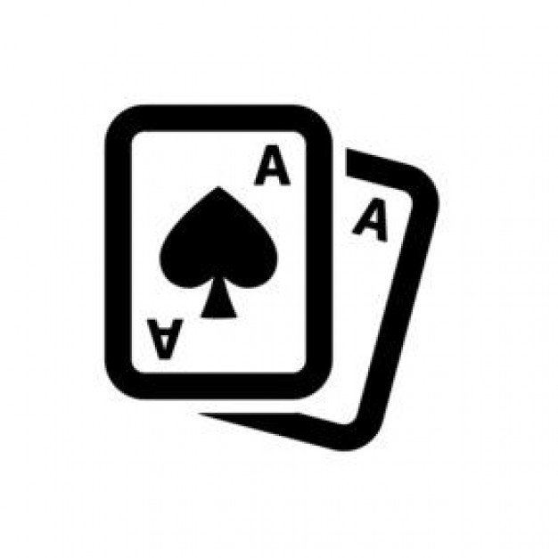

<mat-sidenav-container fullscreen>
  <mat-sidenav #sideNav [opened]="!isScreenSmall()" [mode]="isScreenSmall() ? 'over' : 'side'" class="poker-sidenav">
    <nav>
      <ul>
        <li>
          <a mat-button routerLink="/">
            
            <span>Poker League Manager</span>
          </a>
        </li>
        <li><a mat-button routerLink="Home" routerLinkActive="poker-sidenav-selected">Home</a></li>
        <li><a mat-button routerLink="Games" routerLinkActive="poker-sidenav-selected">Games</a></li>
        <li><a mat-button routerLink="Stats" routerLinkActive="poker-sidenav-selected">Stats</a></li>
        <li><a mat-button routerLink="POTY" routerLinkActive="poker-sidenav-selected">POTY</a></li>
        <li><a mat-button routerLink="Media" routerLinkActive="poker-sidenav-selected">Media</a></li>
        <li><a mat-button routerLink="Rules" routerLinkActive="poker-sidenav-selected">Rules</a></li>
      </ul>
    </nav>
  </mat-sidenav>
  <mat-sidenav-content>
    <poker-navbar (SideNavToggled)="sideNav.toggle()"></poker-navbar>
    <router-outlet></router-outlet>
  </mat-sidenav-content>
</mat-sidenav-container>
